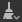

Explorer
This page describes the Explorer dock in Substance 3D Designer. This dock lets you manage packages and their resources.
In this page
Overview
The Explorer dock is where you manage your files and resources currently open in Substance 3D Designer. It shows you a list of all packages currently open, with each package expanded as a hierarchy to show resources inside of it.
The Explorer is where you start and end your projects, as it lets you create, save and export any kind of resource.
You can do a few important actions through the Explorer dock:
- Create new packages and graphs
- Load existing packages
- Save and close loaded packages
- Import and link resources
- Export graph results to textures
- Publish a package to a Substance 3D asset (SBSAR)
- Send packages to other Substance 3D applications
- Bake maps from a mesh
Top toolbar
This toolbar lets you quickly perform functions related to your overall workflow. All buttons are context-aware, which means they activate and change their behaviour based on your current selection in the Explorer.
Save selected package.
 Publish or send selected element(s):
Publish or send selected element(s):
- Publish any selected package to a Substance 3D asset (SBSAR);
- Send the selected package to Substance 3D Sampler, Substance 3D Painter or Substance 3D Stager.
 Publish or send as previous: Publish or send the selected elements with the same settings as before. This option is only available on a package that has already been published at least once in the current session.
Publish or send as previous: Publish or send the selected elements with the same settings as before. This option is only available on a package that has already been published at least once in the current session.
 Remove unused nodes in selected graph(s). The tool follows these rules:
- The tool is only available if selected items are of the same type: only graphs, folders or packages;
- When the selection includes folders or packages, the tool cleans all graphs therein recursively;
- If one of the targeted graphs is a Substance graph, a second option is available which lets you clean all parameter functions on nodes in that graph.
Learn more about the tool in the 'Remove unused nodes' section of the Graph view page.
If the package contains at least one MDL graph, two additional buttons are added in the toolbar:
 Export MDL module (*.mdl)
Export MDL module (*.mdl)
 Export MDL module archive (*.mdr)
Export MDL module archive (*.mdr)
Learn more about these two options in the Exporting MDL content section of this documentation.

Publish/Send

Remove unused nodes
Bottom toolbar
The toolbar at the bottom of the Explorer dock provides information about a package or a package resource:
Dependencies: When a package is selected, its package dependencies are listed in a dedicated panel.
 Information: Provides metadata related to the package or resource currently selected:
Information: Provides metadata related to the package or resource currently selected:
- Package: the full filepath of the package
- Bitmap resource: the full filepath of the resource, its ICC profile, image size and import method (I.e., linked or imported)

Dependencies

Information